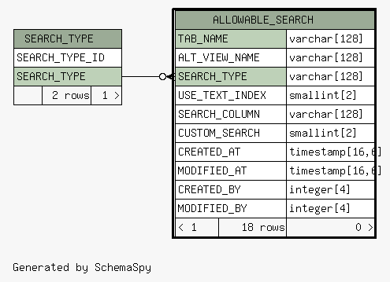
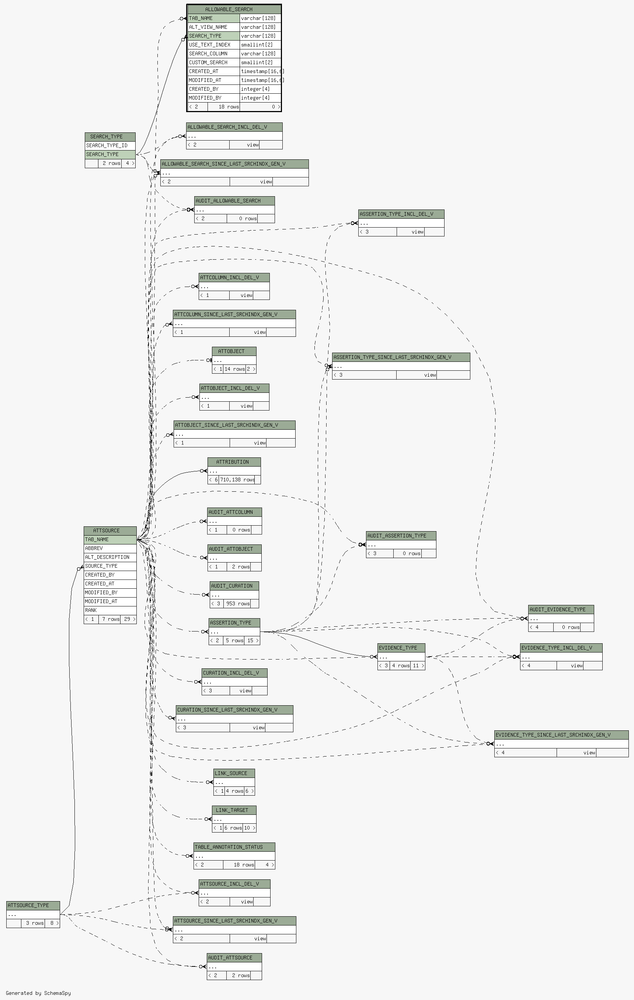

| Table DEVEL31.DB2INST1.ALLOWABLE_SEARCH This table stores the kinds of searches that can be generically performed in Xenbase, intially used in the attribution system
|
Generated by SchemaSpy |
| ||||||||||||||||||||||||||||||||||||||||||||||||||||||||||||||||||||||||||||||||||||||||||||||||||||||||||||||||||
Table contained 18 rows at Sun Oct 10 18:11 MDT 2021 | ||||||||||||||||||||||||||||||||||||||||||||||||||||||||||||||||||||||||||||||||||||||||||||||||||||||||||||||||||
Indexes:
| ID | Column(s) | Type | Sort | Constraint Name |
|---|---|---|---|---|
| 1 | TAB_NAME + SEARCH_TYPE | Primary key | Asc/Asc | PK_ALLOW_SEARCH |
|
  |